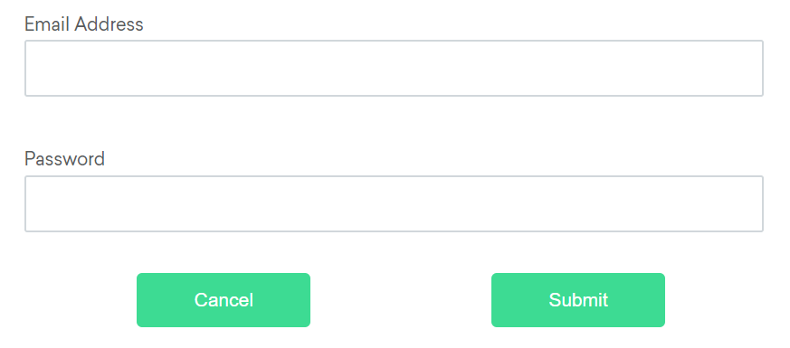

元素支持
修改于: 2023-02-20文件上传
不能直接与上传的Dialog交互, 不过对于 input 标签的上传, 可以设置路径:
file_input = driver.find_element(By.CSS_SELECTOR, "input[type='file']") file_input.send_keys(upload_file) driver.find_element(By.ID, "file-submit").click()
元素查找
对于以下内容而言:
<ol id="vegetables"> <li class="potatoes">… <li class="onions">… <li class="tomatoes"><span>Tomato is a Vegetable</span>… </ol> <ul id="fruits"> <li class="bananas">… <li class="apples">… <li class="tomatoes"><span>Tomato is a Fruit</span>… </ul>
查询某一个标签, 只会 返回第一个匹配的元素:
vegetable = driver.find_element(By.CLASS_NAME, "tomatoes")
可以通过 子元素查找:
fruits = driver.find_element(By.ID, "fruits") fruit = fruits.find_element(By.CLASS_NAME,"tomatoes")
优化, 可以直接使用 CSS选择器
fruit = driver.find_element(By.CSS_SELECTOR,"#fruits .tomatoes")
若需要 查找所有元素, 使用 复数形式(find_elements) 查找:
plants = driver.find_elements(By.TAG_NAME, "li")
获取当前 激活/聚焦的元素
from selenium import webdriver
from selenium.webdriver.common.by import By
driver = webdriver.Chrome()
driver.get("https://www.google.com")
driver.find_element(By.CSS_SELECTOR, '[name="q"]').send_keys("webElement")
# Get attribute of current active element
attr = driver.switch_to.active_element.get_attribute("title")
print(attr)
Web元素交互
仅有五种基本命令可用于元素的操作:
点击 (适用于任何元素) 元素点击命令 执行在 元素中央. 如果元素中央由于某些原因被 遮挡 , Selenium将返回一个 元素点击中断 错误.:
# Navigate to url driver.get("https://www.selenium.dev/selenium/web/inputs.html") # Click on the element driver.find_element(By.NAME, "color_input").click()发送键位 (仅适用于文本字段和内容可编辑元素) 元素发送键位命令 将录入提供的键位到 可编辑的 元素. 通常, 这意味着元素是具有 文本 类型的表单的输入元素或具有 内容可编辑 属性的元素. 如果不可编辑, 则返回 无效元素状态 错误.:
# Navigate to url driver.get("https://www.selenium.dev/selenium/web/inputs.html") # Clear field to empty it from any previous data driver.find_element(By.NAME, "email_input").clear() # Enter Text driver.find_element(By.NAME, "email_input").send_keys("admin@localhost.dev" )清除 (仅适用于文本字段和内容可编辑元素) 元素清除命令 重置元素的内容. 这要求元素 可编辑, 且 可重置. 通常, 这意味着元素是具有 文本 类型的表单的输入元素或具有 内容可编辑 属性的元素. 如果不满足这些条件, 将返回 无效元素状态 错误.:
# Navigate to url driver.get("https://www.selenium.dev/selenium/web/inputs.html") # Clear field to empty it from any previous data driver.find_element(By.NAME, "email_input").clear()提交 (仅适用于表单元素) 在Selenium 4中, 不再通过单独的端点以及脚本执行的方法来实现. 因此, 建议不要使用此方法, 而是单击相应的表单提交按钮.
选择 (参见 选择列表元素)
设计目的是尽量模拟用户体验, 会事先做以下事情:
- 如果它确定元素在视口之外, 则会将元素滚动到视图中, 特别是将元素底部与视口底部对齐
- 确保元素在执行操作之前是可交互的 . 这可能意味着滚动不成功, 或者该元素没有以其他方式显示. 确定某个元素是否显示在页面上太难了 无法直接在webdriver规范中定义, 因此Selenium发送一个带有JavaScript原子的执行命令, 检查是否有可能阻止该元素显示. 如果确定某个元素不在视口中, 不显示, 不可 键盘交互, 或不可 指针交互, 则返回一个元素不可交互 错误
元素定位策略
在 WebDriver 中有 8 种不同的内置元素定位策略：
| 定位器 | Locator | 描述 |
|---|---|---|
| class name | 定位class属性与搜索值匹配的元素（不允许使用复合类名） | |
| css selector | 定位 CSS 选择器匹配的元素 | |
| id | 定位 id 属性与搜索值匹配的元素 | |
| name | 定位 name 属性与搜索值匹配的元素 | |
| link text | 定位link text可视文本与搜索值 完全匹配 的锚元素. 如 href 标签内的文本 | |
| partial link text | 定位link text可视文本部分与搜索值 部分匹配 的锚点元素。如果匹配多个元素，则只选择第一个元素。 | |
| tag name | 定位标签名称与搜索值匹配的元素 | |
| xpath | 定位与 XPath 表达式匹配的元素 |
- 相对定位器
4.0提供新功能. 假设有一个登陆界面:
由于某些原因不方便直接定位 邮箱 元素, 那么可以通过下面的 密码 元素定位:
email_locator = locate_with(By.TAG_NAME, "input").above({By.ID: "password"})支持以下:
- Above, 某元素上方
- Below, 某元素下方: password_locator = locate_with(By.TAG_NAME, "input").below({By.ID: "email"})
- Left of, 代码中是 to_left_of:: cancel_locator = locate_with(By.TAG_NAME, "button").to_left_of({By.ID: "submit"})
- Right of, to_right_of:: submit_locator = locate_with(By.TAG_NAME, "button").to_right_of({By.ID: "cancel"})
- Near, email_locator = locate_with(By.TAG_NAME, "input").near({By.ID: "lbl-email"})
支持链式调用:
submit_locator = locate_with(By.TAG_NAME, "button").below({By.ID: "email"}).to_right_of({By.ID: "cancel"})
网络元素的信息
参考: https://www.selenium.dev/zh-cn/documentation/webdriver/elements/information/
支持以下查询:
是否显示:
# Navigate to the url
driver.get("https://www.selenium.dev/selenium/web/inputs.html")
# Get boolean value for is element display
is_email_visible = driver.find_element(By.NAME, "email_input").is_displayed()
是否启用:
# Navigate to url
driver.get("https://www.selenium.dev/selenium/web/inputs.html")
# Returns true if element is enabled else returns false
value = driver.find_element(By.NAME, 'button_input').is_enabled()
是否被选定:
# Navigate to url
driver.get("https://www.selenium.dev/selenium/web/inputs.html")
# Returns true if element is checked else returns false
value = driver.find_element(By.NAME, "checkbox_input").is_selected()
获取元素标签名:
# Navigate to url
driver.get("https://www.selenium.dev/selenium/web/inputs.html")
# Returns TagName of the element
attr = driver.find_element(By.NAME, "email_input").tag_name
获取参照元素的尺寸和坐标, 数据主体包含以下详细信息：
- 元素左上角的X轴位置
- 元素左上角的y轴位置
- 元素的高度
- 元素的宽度
例:
# Navigate to url
driver.get("https://www.selenium.dev/selenium/web/inputs.html")
# Returns height, width, x and y coordinates referenced element
res = driver.find_element(By.NAME, "range_input").rect
获取元素CSS值
# Navigate to Url
driver.get('https://www.selenium.dev/selenium/web/colorPage.html')
# Retrieves the computed style property 'color' of linktext
cssValue = driver.find_element(By.ID, "namedColor").value_of_css_property('background-color')
获取特定元素渲染后的文本内容:
# Navigate to url
driver.get("https://www.selenium.dev/selenium/web/linked_image.html")
# Retrieves the text of the element
text = driver.find_element(By.ID, "justanotherlink").text
获取特性或属性:
# Navigate to the url
driver.get("https://www.selenium.dev/selenium/web/inputs.html")
# Identify the email text box
email_txt = driver.find_element(By.NAME, "email_input")
# Fetch the value property associated with the textbox
value_info = email_txt.get_attribute("value")